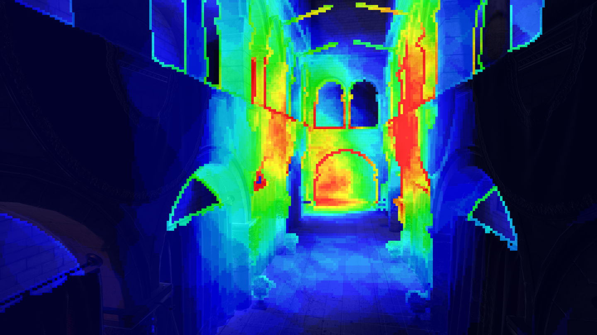
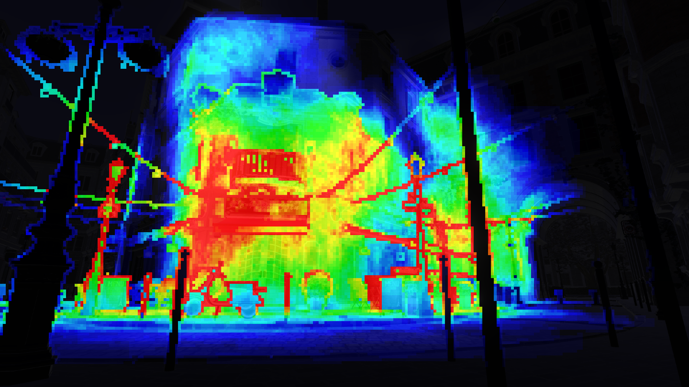
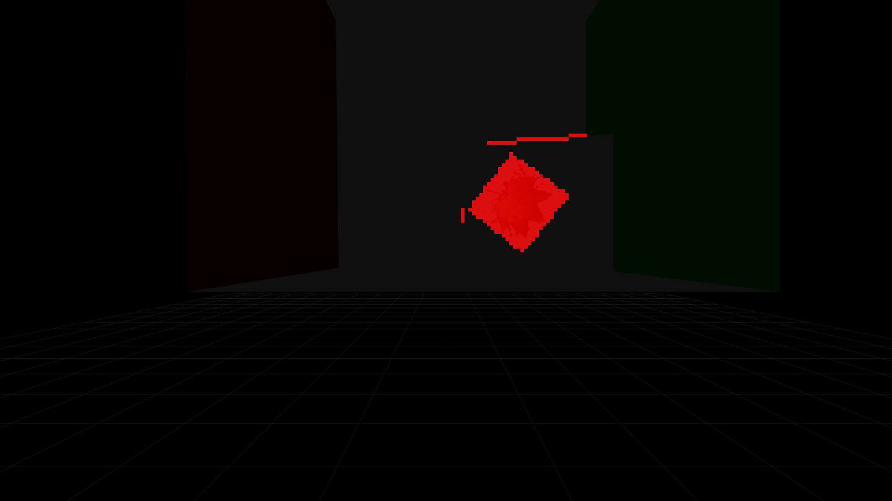

Thoughts on light culling: stream compaction vs flat bit arrays
I had my eyes set on the light culling using flat bit arrays technique for a long time now and finally decided to give it a try. Let me share my notes on why it seemed so interesting and why I replaced the stream compaction technique with this. I will describe both techniques and make comparisons between them. Wall of text incoming with occasional code pieces, in brain dump style.
(For this post, I considered a layout where the comparison between the two techniques for each point follow each other immediately, but decided against it, and instead there are two big blocks: stream compaction technique, then the flat bit array technique following it. The points are in similar order for both, so comparison could be easily made by having two browser windows opened for example. It wouldn’t be so simple to do the opposite thing.)
Stream compaction
Idea is based on Johan Andresson’s 2011 GDC talk: DirectX 11 rendering in Battlefield 3
Culling phase:
- Each tile contains list of lights. Each entry is one uint that is an index into light array. So each tile contains max_lightcount_per_tile number of uints. For me it was 256 entries per tile, and decided at compile time.
- Possible to compact even further in a way that the average light count per tile is specified (instead of max) when allocating tile buffer and have one more level of indirection. The other indirection here is introducing a “light grid” buffer/texture that would contain the offset and count into the “light index buffer”, while the “light index buffer” contains the light indices in a very compact stream (next tile list’s first entry immediately follows the last light index in the previous tile). This way one tile can contain an unbounded number of lights (well, still bounded on the global tile buffer allocation size). The construction of such structure is complicated and not worth the trouble in my experience (it uses even more atomics). You can see such technique presented in [this other blog]. I have implemented this technique, but in the end I chose to keep the hard coded max items per tile and have one less level of indirection.
- Culling shader performs stream compaction, that is, using a light index list in groupshared memory and an atomic counter to append lights to the list. Something like this:
groupshared uint ArrayLength = 0;
groupshared uint Array[256];
void AppendLight(uint lightIndex)
{
uint index;
InterlockedAdd(ArrayLength, 1, index);
if (index < 256)
{
Array[index] = lightIndex;
}
}- Stream compaction can be scalarized with wave intrinsics so that 64x less amount of atomic operations are performed. The idea here is that we will have a per-wavefront bitmask containing set bits for all lanes that wanted to append. This is retrieved by WaveActiveBallot(IsLightCulledInCurrentThread()). This bitmask first gives us how many lanes wanted to append (countbits() function), and the first lane does an InterlockedAdd() with this value to the groupshared light counter. The rest of the lanes don’t do the atomic, so atomics are significantly reduced. The first lane’s result of the InterlockedAdd() returns the wavefront’s offset to the groupshared light index list and broadcasted to the other lanes via WaveReadLaneFirst() intrinsic function. The rest of the lanes need to just write their light index to the list, starting from the broadcasted offset, and doing a prefix sum on the ballot bitmask (WavePrefixSum()) that will give the real offset to the groupshared light index list.
- Stream compaction is unordered because the item append order relies on one atomic counter. That is fine for lights which use additive blending where the order of operations doesn’t matter for the final output. But once we have decals or environment probes, those are not blended additively, so the undefined order of the items would result in flickering between tiles. To avoid that, we can do a bitonic sort in the compute shader. Doing a bitonic sort in the compute shader is a heavy weight operation, but we can keep track if there were any decals or probes in the tile and only do the sorting if there are. A bitonic sort that runs in a single thread group looks like this (from Gareth Thomas’s tile based particle rendering talk):
// Parameter is SV_GroupIndex
void BitonicSort( in uint localIdxFlattened )
{
uint numArray = ArrayLength;
uint numArrayPowerOfTwo = 2 << firstbithigh(numArray - 1);
for( uint nMergeSize = 2; nMergeSize <= numArrayPowerOfTwo; nMergeSize = nMergeSize * 2 )
{
for( uint nMergeSubSize = nMergeSize >> 1; nMergeSubSize > 0; nMergeSubSize = nMergeSubSize >> 1 )
{
uint tmp_index = localIdxFlattened;
uint index_low = tmp_index & ( nMergeSubSize - 1 );
uint index_high = 2 * ( tmp_index - index_low );
uint index = index_high + index_low;
uint nSwapElem = nMergeSubSize == nMergeSize >> 1 ? index_high + ( 2 * nMergeSubSize - 1 ) - index_low : index_high + nMergeSubSize + index_low;
if( nSwapElem < numArray && index < numArray )
{
if( Array[ index ] < Array[ nSwapElem ] )
{
uint uTemp = Array[ index ];
Array[ index ] = Array[ nSwapElem ];
Array[ nSwapElem ] = uTemp;
}
}
GroupMemoryBarrierWithGroupSync();
}
}
}- The best culling granularity in my experience turned out to be having 16×16 pixel tiles and 16×16 threads in the culling threadgroup. A large thread group is beneficial, because we will have a large groupshared memory reservation, and the bitonic sort works best with a large thread count. Remember that even though we are only interested in the decal and probe ordering, we have to sort the whole entity array, including lights, because lights are in the same array as decals and probes. A large thread group and large groupshared memory usage means reduced occupancy of the shader, so parallel execution between thread groups is reduced.
- We are still only in the culling shader phase, and an other difference is how the groupshared memory (also called LDS or local data share) is initialized at the beginning. The depth range min-max and the 2.5D culling mask are initialized, and the counter that is responsible to insert the light indices into the array is zeroed out. The LDS light array doesn’t need to be initialized.
- At the end of the culling shader, we export the light list by having each thread export one light index. Also, the first thread exports a “tile statistics” uint that says how long is the list, how many decals,probes and lights are inside it.
Rendering phase:
- We process the light list in the forward+ object shader or the tiled deferred compute shader trivially. We read the “tile statistics” uint first, and determine the decals count, probe count and light count in the tile. The following uints are indices into the global entity array that the camera can see, so just iterate through all of them until we reach the last one. Having the decal and probe count is handy, because for some objects, or particles, etc. we don’t want to apply decals, so we can just skip through them and start with the first light index instead. Also, if we process decals, and the top decal fully covers the ones under it, we can skip processing them and continue with the lights.
- We have high divergence if we process like this inside a pixel shader (forward+), but we can help a bit by using wave intrinsics to scalarize it. It is not trivial and in the worst case it can lead to redundant processing of items. See more info in Drobot’s presentation, the section about “hierarchical container scalarization”.
- The good thing about processing a compact light index list is that it is compact, so every light index that we process will be contributing to the tile.

Flat bit arrays
Idea from Michal Drobot’s 2017 Siggraph presentation: Improved culling for tiled and clustered rendering
Culling phase:
- Each tile contains bit buckets. One bit bucket is a 32-bit uint, that is responsible to index up to 32 lights. So each tile contains max_lightcount_in_view/32 number of uints. That means that for the same amount of max lights per tile as stream compaction method, we use 32x less memory.
- Culling shader simply computes which bucket can index the currently processed light, then computes which bit maps to the light index, then performs atomic OR operation to the groupshared light bucket list. The groupshared light bucket list is max_lightcount_in_view/32 number of units. The following code piece demonstrates this:
groupshared uint tile[256 / 32];
void AppendLight(uint lightIndex)
{
const uint bucket_index = entityIndex / 32;
const uint bucket_place = entityIndex % 32;
InterlockedOr(tile[bucket_index], 1 << bucket_place);
}- Bitmask insertion could probably be scalarized in a way that no atomic operations would be necessary. I imagine we would just do a WaveActiveBitOr() instead of InterlockedOr() on the bucket, and if it is the first lane (WaveIsFirstLane()) it would just write the bucket without using atomics. (unfortunately I can’t get sm6.0 working on my current laptop, so I haven’t tried this yet)
- Bitmask insertion is ordered, we will always get a deterministic order of items, which is the same order as the CPU assembled the global light array. If we have decals and environment probes, we only ensure that they are culled and added to the global light list (or should we say entity list at this point) before the lights (on the CPU). The reason is, because we want to apply decals before applying lights, so that they are lighted just like the surface underneath. Environment probes can be applied before or after the lights, because they will be added to the specular result. However, ordering between locally placed probes does matter, because they are blended amongst themselves with alpha blending. So in the end, we don’t have to sort in the culling shader with the flat bit array technique. That is a big relief and greatly simplifies the shader.
- The best culling granularity for flat bit arrays turned out to be having 16×16 pixel tiles, however we can also reduce the thread group size to be 8×8 for example to have better occupancy, because there is no sort and little LDS use compared to the compaction technique. But then some shader complexity is added, because each thread will be responsible to work on a small subgroup of the tile. Consider that with 16×16 pixels and 16×16 threads, each thread can work on a single pixel when reading the depth buffer and creating the depth bounds and maybe a 2.5D culling bitmask (Takahiro Harada’s 2012 talk in Siggraph Asia, and also my blog about it). But when reducing the thread count to 8×8, each thread must load 2×2 pixel block instead. However, this also reduces the atomic contention for computing the min-max depth bounds or the 2.5D bitmask (4x times less atomic operations for these phases), because the operations inside the subgroup are performed as non atomic. The whole tile result then will be the result of atomic operations between the subgroups, so in the end that just means less atomics were performed. We don’t have to modify the culling part of the shader however, because that doesn’t work on a thread/pixel granularity, but thread/entity granularity instead. The last thing here worth to mention is that 8×8 thread group size seems like a perfect fit for AMD GCN architecture, which has 64 threads in a wavefront, so the barriers in the compute shader will be even omitted completely. On Nvidia, the wavefront (warp) size is 32 threads, but modifying the thread size to be for example 8×4 threads would also require redesigning how subgroups are processed, which I didn’t tackle for now. It would be an interesting experiment to see how different subgroup distributions would perform. In my implementation, a thread is operating on a 2×2 pixel block, but that could be rewritten so that a thread operates on a row of 4 pixels or something else. Maybe a 8×8 pixel block should be processed first, then move on to the next 8×8 pixel block, and do this 2×2 times. Need to try these and compare. An other idea here: the 2×2 pixel block is also nice for gathering from the depth buffer, we could use one GatherRed() instruction to load 4 samples for the whole subgroup, however that will require a custom code path that won’t work if we choose an other kind of distribution.
- We don’t have a light array counter in the flat bit aray technique, but instead all the light buckets need to be set to zero, indicating that no lights are contained yet. This is done by each thread just zeroing out one bucket (one uint) until all of them are zeroed out. Apart from that, the common things such as tile depth range are also initialized like always.
- At the end of the culling shader, each thread exports one bucket, until all buckets were written to global memory. There is no need to have a “tile statistics” entry, because the bitfield directly corresponds to all entities inside the main camera. So the tile statistics can be replaced with just a constant buffer value that contains how many decals/envprobes/lights are inside the main camera.
Rendering phase:
- Processing the flat bit arrays relies on the firstbitlow() instrinsic in HLSL that gives us the first set bit’s index in the uint bucket, starting from the lowest bit. If the bucket is zero, we continue with the next bucket (thus skipping over 32 non-visible lights), otherwise call firstbitlow(bucket), compute the light index from the bucket index and the bit index, then process the light. Then remove the bit and continue to get the next first low bit until the bucket is not zero. If we want to skip decals, we can do that here too: we can trivially start from the specific bucket’s specific bit that we want to start iterating on (for example if we want to leave out the decals but there are 42 decals inside the camera (first light in entity 43), we can start processing from the second bucket, and mask off the first 10 bits (42-32=10). Here is a pseudo-code how we can extract light index bits from the buckets:
// retrieve tile index (for 16x16 block size):
const uint2 tileIndex = uint2(floor(pixel.xy / 16));
// compute flattened tile index because tile buffer is linear array:
// g_tileCount = ScreenResoulution.xy / 16
// g_bucketCountPerTile = max_light_count / 32
const uint flatTileIndex = (tileIndex.x + tileIndex.y * g_tileCount.x) * g_bucketCountPerTile;
for(uint bucket = 0; bucket < g_bucketCountPerTile; ++bucket)
{
uint bucket_bits = Tiles[flatTileIndex + bucket];
while(bucket_bits != 0)
{
const uint bucket_bit_index = firstbitlow(bucket_bits);
const uint entity_index = bucket * 32 + bucket_bit_index;
bucket_bits ^= 1 << bucket_bit_index;
Light light = LightArray[entity_index];
// process light here...
}
}- Processing these in pixel shaders for forward+ will still yield high VGPR usage because of divergent access to the buckets. However, the scalarization of the buckets themselves is really elegantly done with a single line: bucket_bits = WaveReadLaneFirst(WaveActiveBitOr(bucket_bits)); After the buckets are scalarized, loading from the global light array (entity array) is also scalar.
- A thing to note about flat bit arrays, is that there can be “holes” in the buckets, so let’s say lightIndex 2 and lightIndex 987 are the only ones contained inside the tile, then the buckets between bucket 0 and bucket 30 are zero, but they can’t be detected in a simple way, so the buckets will be read but not processed. With an other level of indirection, this effect could be reduced, for example having some coarse tiles that are culled with stream compaction, then the finer tile bit buckets would contain indices to those coarse tile light lists. I don’t expect this to be a huge problem, so I haven’t gone there. And it would require the sorting again too. Also, as pointed out by Matt Pettineo on Twitter, the indirection doesn’t have to use stream compaction, but could be an other bitmask, where each bit represents one bucket of 32 entities.

Results:
I’ll compare some results on the bistro scene. The configuration is for GPU times and measured with timestamp queries:
- Common:
- Nvidia GTX 1050 laptop GPU
- Bistro scene (inside + outside)
- 1000 lights, 0 decals, 0 probes
- Forward+ rendering
- 4096 max lights in frustum
- non-scalarized versions (DX11)
- Stream compaction method:
- 255 max lights per tile (255 lights + 1 tile statistics)
- light culling (4k): 5.6 ms
- light culling (1080p): 1.4 ms
- opaque geometry (4k): 43.6 ms
- opaque geometry (1080p): 13 ms
- Flat bit array method:
- 4096 max lights per tile (4096 / 32 = 128 buckets per tile)
- light culling (4k): 2.5 ms
- light culling (1080p): 0.64 ms
- opaque geometry (4k): 41.7 ms
- opaque geometry (1080p): 12.6 ms
The flat bit array method is the winner here, no matter how I look at it. The biggest boost is in the culling shader that is greatly simplified, but the opaque geometry pass is consistently better as well. (4k means 3840×2160 resolution here, 1080p is full HD 1920×1080)
An other small test I made was for the decals, and I just used a simple cornell box, then placed 100 decals into one spot, overlapping with each other, 4k resolution and covering a small part of the screen:
- Test: 100 small overlapping decals (4k)
- Stream compaction method:
- decal culling + sorting: 3.63 ms
- opaque geometry: 3.67 ms
- Flat bit arrays method:
- decal culling: 1.33 ms
- opaque geometry: 2.96 ms

It’s a win again, and the closer I zoomed the camera into the decals, the bigger the difference was between the two techniques. This is the result for full screen decal coverage, 100 overlapping decals, still 4k resolution:
- Test: 100 full screen overlapping decals (4k)
- Stream compaction method:
- decal culling + sorting: 17.82 ms
- opaque geometry: 84.57 ms
- Flat bit arrays method:
- decal culling: 2.12 ms
- opaque geometry: 71.48 ms
To be honest, I did not expect that kind of speedup, so I am very pleased and can say time was well spent implementing this.
Other notes:
- One interesting thing I noticed is that I first had one huge loop, and the decal + probe + light evaluation were all included in that single loop. Performance was horrible, especially on the Intel 620 GPU. It was something like +10 ms for opaque geometry pass on a scene with 4 big shadow casting lights, even if no decals or probes were processed at all. After that, I broken up the loop into 3 loops, one for decals, one for probes and one for lights. The performance jump was very noticable. This applies for both techniques, try to break up entities that are processed differently to achieve the best performance. This is due to the compiler can manage to do a better job reserving and reusing registers, so in the end you can have a reduced amount of registers used, even if there are more loops. This is because register lifetime can be constrained to loop scope (if they are not unrolled).
- An other thing related to the Intel 620 GPU was the annoying fact that I noticed some small flickering of the tiles with the stream compaction technique that only happened rarely, even with a completely static scene. I could never figure it out, but it doesn’t happen with the flat bit array technique. Now I suspect that it might be related to the thread group size, because I also had bugs with tiled deferred compute shader if it was running with 16×16 thread group size and using a RW texture.
- After getting to know the flat bit array technique, I also implemented a similar one for old-school forward rendering path. For that, the CPU can cull lights per object and provide a per draw call bitmask in a constant buffer. The bitmask is a uint4, where 1 uint represents 32 decals, 1 uint represents 32 probes, and 2 uints allow 64 lights to be evaluated for forward rendered objects. I never wanted to do this previously, because then a big constant buffer needs to be updated with light indices per draw call. An other candidate how to send this bitmask to the shader would be the instance buffer, but having it in the constant buffer means scalarized loads (and also don’t have to propagate the mask from vertex to pixel shader – less parameters to send is good to avoid parameter cache bottleneck). Unfortunately, culling efficiency is reduced if many instances are visible, because a constant buffer will be per draw call granularity instead of per instance.
- It will be also interesting to try not using a culling compute shader, but rely on conservative rasterization (or MSAA), and draw the light proxies instead, then those would do atomic writes into the tile buffer in the pixel shader. Michal Drobot suggested that this can be faster than running the compute shader and doing software culling, because rasterization will make use of the zbuffer, and zbuffer tile acceleration (coarse conservative z-test in the hardware that supports it, not user controlled). A minor issue with this might be that not everything supports conservative rasterization or forced sample count setting for MSAA today (conservative rasterization can be approximated with MSAA).
Implementation samples:
As always, you can find my implementation for these in Wicked Engine. I have made two snapshot branches for the two separate techniques, and while the main branch will updated, these will remain like this to represent the state of this blog:
- light culling compute shader (stream compaction version)
- forward+ object shader (stream compaction version)
- light culling compute shader (flat bit array version)
- forward+ object shader (flat bit array version)